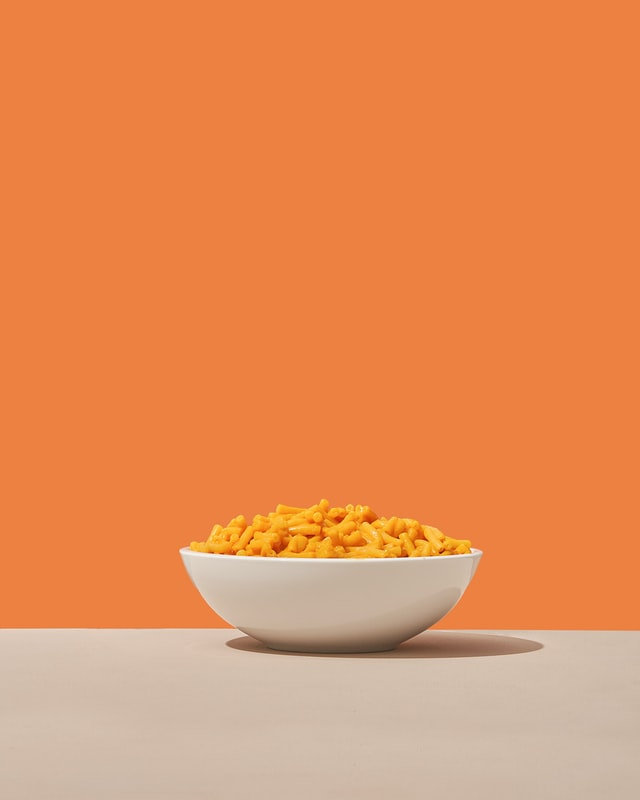

Mac'N'Cheese!
Return to Recipe List

Description
Enjoyed by the millions, there's nothing like coming home after a long day to a warm bowl of cheesy goodness. Get ready to boil, stir, and bake an enjoyable meal of Mac'N'Cheese.
NOTE: This recipe uses a high amount of fats, cheese, and gluten products to create a delicious bowl of mac'n'cheese. If you've suffered digestive issues with these ingredients in the past, we wouldn't recommend this recipe for you.
Ingredients
- 1 lb. of dried elbow pasta.
- 1/2 cup of unsalted butter.
- 1/2 cup of all purpose flour.
- 1 and a 1/2 cups of whole milk.
- 2 and a 1/2 cups of half and half
- 4 cups of shredded medium sharp cheddar cheese.
- 2 cups of shredded Gruyere cheese.
- 1/2 a tablespoon of salt.
- 1/2 a tablespoon of black pepper.
- 1/4th a tablespoon of paprika.
Steps
- Preheat the oven to 325°F, continue with step 2 while you wait.
- Grease a 3 qt baking dish, and set it aside.
- Using a large pot of salted water, boil it. While you're boiling, add the dried pasta, and cook for a minute less than the package directs. This is intentional. Ensure it's drained and drizzled with a small amount of olive oil to keep it from getting sticky.
- While the water's boiling, shred those cheeses and toss them together to make a healthy mix. Divide them into three piles. You're going to make roughly 3 cups worth for the sauce, roughly 1 and a 1/2 cups for the inner layer, and roughly 1 and a 1/2 cups for the topping.
- Next up, things might get messy. Melt some butter in a large saucepan over the 'Medium' heat setting. Sprinkle in some flour and whisk it to combine, this'll make the mixture look like wet sand. Then, cook it for approximately 1 minute, ensuring you whisk it often.
- Slowly pour in about 2 cups or so of the milk and half & half while whisking nonstop until it's smooth.
- Slowly pour in the remaining milk and half & half, while whisking nonstop until they're combined and smooth again.
- Continue to heat it over the 'Medium' heat setting, and whisk it quite often until it thickens out to quite the thick consistency. To be safe, the consistency should be close to a semi thinned out variant of a condensed soup.
- Remove it from the heat, and stir in your spices and 1 and a 1/2 cups of the cheeses. Then, stir it to melt and combine them.
- Stir in another 1 and a 1/2 cups of cheese, and stir until completely melted and smooth.
- Now, using a large mixing bowl; combine the drained pasta with your cheese sauce, stirring it to combine the two fully.
- Pour half of the pasta mixture into the prepared baking dish. Top it with 1 and a 1/2 cups of shredded cheeses, then top that with the remaining pasta mixture.
- Sprinkle the top with the last 1 and a 1/2 cups of cheese, bake it for 15 minutes, and ensure the cheese is bubbly and lightly golden brown.
- Last but not least, the best part! Let it cool slightly, serve it up, and enjoy!